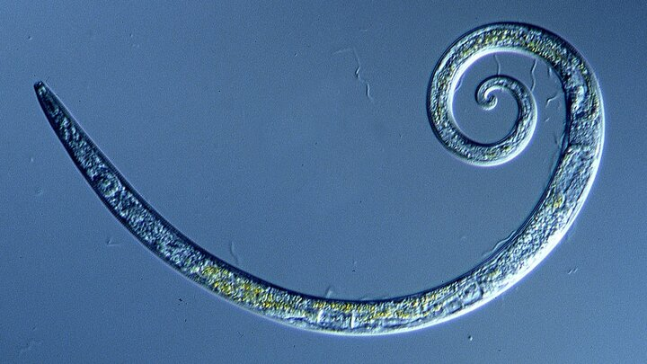

Пробудившийся древний червь |
|
|
Международная команда исследователей наконец возродила древнюю аскариду – круглого червя, который был заморожен в сибирской вечной мерзлоте на протяжении тысячелетий. Эта форма жизни оказалась даже старше, чем когда-то считали ученые. Во время исследования в 2018 году возраст нескольких таких воскресших нематод из рода Panagrolaimus был определен примерно в 32000 лет. Но теперь более точное радиоуглеродное датирование предполагает, что эти почвенные черви оставались живыми в некоторых частях Сибири, по крайней мере, с позднего плейстоцена, около 46 000 лет назад. Это абсолютный рекорд самого длительного из известных состояний крайнего бездействия, наблюдаемого среди животных: явление известно как криптобиоз. Оживив замороженного червя в лаборатории и культивируя его на протяжении более 100 поколений, исследователи под руководством экспертов из Института Макса Планка в Германии провели анализ генома существа. Вид получил название Panagrolaimus kolymaensis. На сегодняшний день ученым известно очень мало животных, способных приводить себя в лимбоподобное состояние в ответ на жесткие условия окружающей среды. Среди них тихоходки (Tardigrada), нематоды (Nematoda) и микроскопические водные организмы – коловратки (Rotifera). Насколько нам известно об этом уникальном процессе, эти животные вполне могут оставаться в обезвоженном или высушенном состоянии «на неопределенный срок» или, по крайней мере, до тех пор, пока условия не станут оптимальными для продолжения жизни. Самое долгое зарегистрированное время, проведенное в криптобиозе, среди ныне живущих червей составляет всего 39 лет. Даже тихоходки вернулись к своему нормальному метаболическому состоянию уже после 30 лет пребывания в замороженном состоянии. Древний червь Р. Kolymaensis был найден в сибирской вечной мерзлоте на глубине примерно 40 метров. Когда исследователи датировали некоторые растительные материалы, найденные рядом с этим существом, выяснилось, что они замерзли где-то в промежутке между 45 839 и 47 769 лет назад. |
реклама реклама реклама реклама реклама реклама реклама реклама реклама реклама реклама реклама реклама реклама реклама реклама реклама реклама реклама реклама реклама реклама реклама реклама реклама реклама реклама реклама реклама реклама реклама реклама реклама реклама реклама реклама |
| реклама реклама реклама реклама реклама реклама реклама реклама реклама реклама реклама реклама реклама реклама реклама реклама реклама реклама реклама реклама реклама реклама реклама реклама реклама реклама реклама реклама реклама реклама реклама реклама реклама реклама реклама реклама | |
| реклама реклама реклама реклама реклама реклама реклама реклама реклама реклама реклама реклама реклама реклама реклама реклама реклама реклама реклама реклама реклама реклама реклама реклама реклама реклама реклама реклама реклама реклама реклама реклама реклама реклама реклама реклама |
Обратная связьНапишите нам | |
| Хисамутдинова А.М., 2024 |